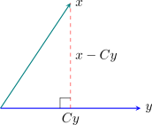

5.7 Complete Orthonormal Sets
Definition 5.26. A set of vectors \(\{x_n\}^{\infty }_{n=1}\) in a Hilbert space \(H\) is complete if for all \(n\geq 1\) \[(y,x_n)=0\implies y=0\]
Theorem 5.28. Let \(\{x_n\}^{\infty }_{n=1}\) be an orthonormal basis in a Hilbert space \(H\). Then for each \(y\in H\), \[y=\sum ^{\infty }_{n=1}(y,x_n)x_n\qquad (1)\] and \[||y||^2=\sum ^{\infty }_{n=1}|(y,x_n)|^2\qquad (2)\]
Proof. For all \(n\leq N\) \begin {align*} \Bigg (y-\sum ^N_{k=1}(y,x_k)x_k,x_n\Bigg ) &=(y,x_n)-\Bigg (\sum ^{N}_{k=1}(y,x_k)x_k,x_n\Bigg )\\ &=(y,x_n)-\sum ^N_{k=1}(y,x_k)(x_k,x_n)\\ &=(y,x_n)-(y,x_n)(x_n,x_n)\\ &=(y,x_n)-(y,x_n)\\ &=0 \end {align*}
This implies that \(\displaystyle {y-\sum ^N_{n=1}(y,x_n)x_n=0}\hspace {0.2cm}\) Since \(\{x_n\}\) is complete. That is,
\(\displaystyle {y=\lim _{N\rightarrow \infty }\sum ^N_{n=1}(y,x_n)x_n\implies y=\sum ^{\infty }_{n=1}(y,x_n)x_n}.\) Which proves (1).
For (2), we have that \begin {align*} ||y||^2 &=\lim _{N\rightarrow \infty }\Bigg |\Bigg |\sum ^N_{n=1}(y,x_n)x_n\Bigg |\Bigg |^2\\ &=\lim _{N\rightarrow \infty }\sum ^N_{n=1}|(y,x_n)|^2(x_n,x_n)\\ &=\sum ^{\infty }_{n=1}|(y,x_n)|^2.\\\\\\ \end {align*} □
Remark.
- i
- equation (1) implies that sum of the R.H.S converges to y.
- ii
- equation (2) is known as Parseval’s relation.
Theorem 5.29 (Gram–Schmidt Orthogonalisation Procedure). Every finite dimensional inner product space has an orthonormal basis.
This is done as follows:-
Let \(\{v_1,v_2,\dots ,v_n\}\) be a basis of the inner product \(V\). Then \begin {align*} e_1 &=v_1\\ e_2 &=v_2-\frac {(v_2,e_1)}{||e_1||^2}e_1\\ e_3 &=v_3-\frac {(v_3,e_2)}{||e_2||^2}e_2-\frac {(v_3,e_1)}{||e_1||^2}e_1\\ \vdots \\ e_n &=v_n-\frac {(v_n,e_{n-1})}{||e_{n-1}||^2}e_{n-1}-\frac {(v_n,e_{n-2})}{||e_{n-2}||^2}e_{n-2}-\cdots -\frac {(v_n,e_1)}{||e_1||^2}e_1 \end {align*}
Then \(\{e_1,e_2,\dots ,e_n\}\) is an orthogonal basis for \(V\).
To normalize, divide each vector by its norm that is set
\[P_i=\frac {e_i}{||e_i||},\hspace {2cm} i=1,2,\dots ,n\]
Then \(\{P_1,P_2,\dots ,P_n\}\) is an orthonormal basis.
Proof. The construction in the statement is the Gram–Schmidt procedure; what needs checking is that it does what is claimed at every step.
Let \(\{v_1,\dots ,v_n\}\) be a basis and let \(e_1,\dots ,e_n\) be produced as described, each \(e_k\) being \(v_k\) minus its components along the earlier vectors.
No \(e_k\) is zero
Suppose \(e_k=0\). By construction \(e_k\) is \(v_k\) plus a linear combination of \(e_1,\dots ,e_{k-1}\), each of which is in turn a combination of \(v_1,\dots ,v_{k-1}\). So \(e_k=0\) would express \(v_k\) as a combination of \(v_1,\dots ,v_{k-1}\), contradicting independence of the basis. Hence each \(e_k\) is non-zero and may be normalised.
The \(e_k\) are pairwise orthogonal
By induction. For \(k=2\), \[(e_2,e_1)=\left (v_2-\frac {(v_2,e_1)}{||e_1||^2}e_1,\ e_1\right ) =(v_2,e_1)-\frac {(v_2,e_1)}{||e_1||^2}(e_1,e_1)=0 .\] Assume \(e_1,\dots ,e_{k-1}\) are pairwise orthogonal. For \(j<k\), taking the inner product of \(e_k\) with \(e_j\) kills every subtracted term except the \(j\)-th, and that one cancels exactly as above, giving \((e_k,e_j)=0\).
They span
Each \(v_k\) is recovered from \(e_1,\dots ,e_k\) by reversing the construction, so the span of \(\{e_1,\dots ,e_n\}\) contains every \(v_k\) and hence all of \(V\). Being \(n\) orthogonal non-zero vectors they are linearly independent, so after normalising, \(\{e_1/||e_1||,\dots ,e_n/||e_n||\}\) is an orthonormal basis. □
Definition 5.30. Let \(V\) be an inner product space. The projection of \(x\) onto \(y\) where \(x,y\in V\) is defined as \(\text {Proj}(x,y)=Cy\ni x-Cy\perp y\).
It is easy to show that \(C=\dfrac {(x,y)}{||y||^2}\) . That is \[x-Cy\perp y\implies (x-Cy,y)=0\] \[C(y,y)=(x,y)\] \[C=\frac {(x,y)}{||y||^2}\]

If \(\{x_1,x_2,\dots ,x_n\}\) is an orthogonal basis for \(A\) then \(x\in V, A\subset V\) \begin {align*} \text {Proj}(x,A) &=C_1x_1+C_2x_2+\cdots +C_nx_n\\ &=\frac {(x,x_1)}{||x_1||^2}x_1+\frac {(x,x_2)}{||x_2||^2}x_2+\cdots +\frac {(x,x_n)}{||x_n||^2}x_n \end {align*}
Make \(||A-x||\) as small as possible.
Example 5.31. For \(f,g\in C[-1,1]\), define \(\displaystyle {(f,g)=\int ^1_{-1}(1-x^2)f(x)g(x)dx}.\) This is an inner product on \([-1,1]\).
- 1.
- Show that \((f,f)=0\implies f=0\).
- 2.
- Produce an orthonormal basis for span \(\{1,x\}\).
- 3.
- Find \(p\in \text {span}\{1,x\}\) that minimizes.
Solution.
- 1.
- \(\displaystyle {(f,f)=\int ^1_{-1}(1-x^2)f^2(x)dx=0}\)
\(\implies (1-x^2)f^2(x)=0,\hspace {0.8cm} \text {on}\hspace {0.3cm} [-1,1]\)
\(\implies f=0,\hspace {1cm} \text {on}\hspace {0.4cm} (-1,1)\)
Since \(1-x^2>0\) on \((-1,1)\) \(\implies f=0\), on \([-1,1]\) since \(f\) is continuous.
- 2.
- \(e_1 =1\)
\(e_2 =x-\dfrac {(x,1)}{||1||^2}1=x\)
\(\{1,x\}\) is orthogonal basis for \(C[-1,1]\).
\(||1||^2=\dfrac {4}{3}\), \(||x||^2=\dfrac {4}{15}\) orthonormal basis \(\Big \{\dfrac {\sqrt {3}}{2},\dfrac {\sqrt {15}}{2}x\Big \}\).
- 3.
- \begin {align*} \text {p}(x) &=\text {proj}(x,\text {span}\{1,x\})\\ &=\frac {(x,1)}{||1||^2}1+\frac {(x,x)}{||x||^2}x\\ &=0+x\\ &=x. \end {align*}
\(\text {p}(x)=x\) minises.
Questions on this section
Stuck on something here? Ask below and it stays attached to this topic.